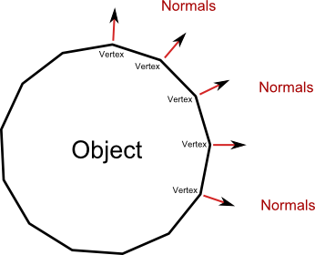
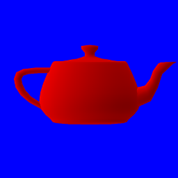
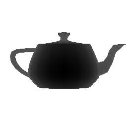

Introduction
Hello and welcome to the glium tutorials! This series of tutorials will teach you how to work with OpenGL thanks to the glium library. Glium's API uses the exact same concepts as OpenGL and has been designed to remove the burden of using raw OpenGL function calls, which are often non-portable, tedious and error-prone. Even if for some reason you don't plan on using the glium library in the future, these tutorials can still be useful as they will teach you how OpenGL and graphics programming in general work.
If at any moment you encounter an error, please open an issue. Everything related to the window, fullscreen mode, or events is handled by glutin, while everything related to rendering is handled by glium.
Creating a project
To start this tutorial, we will create a new project from scratch. Even though it's highly recommended to be familiar with Rust and Cargo before starting, some little reminders are always good. Let's start by running:
cargo new --bin my_project
cd my_project
The directory you have just created should contain a Cargo.toml file which contains our project's metadata, plus a src/main.rs file which contains the Rust source code. If you have src/lib.rs file instead, that means that you forgot the --bin flag ; just rename the file.
In order to use the glium library, we need to add them as dependencies in our Cargo.toml file:
[dependencies]
glium = "*"
Before we can use them, we also need to import this library in our src/main.rs file, like this:
#[macro_use] extern crate glium; fn main() { }
It is now time to start filling the main function!
Creating a window
The first step when creating a graphical application is to create a window. If you have ever worked with OpenGL before, you know how hard it is to do this correctly. Both window creation and context creation are platform-specific, and they are sometimes weird and tedious. Fortunately, this is where the glutin library shines.
Initializing an OpenGL window with glutin can be done using the following steps:
- Creating an
EventLoopfor handling window and device events. - Specify Window parameters using
glium::glutin::WindowBuilder::new(). These are window-specific attributes that have nothing to do with OpenGL. - Specify Context parameters using
glium::glutin::ContextBuilder::new(). Here we specify OpenGL-specific attributes like multisampling or vsync. - Create the OpenGL window (in glium, this is the
Display):glium::Display::new(window, context, &event_loop).unwrap(). This builds a Display using the given window and context attributes, and registers the window with the given event_loop.
fn main() { use glium::glutin; let mut event_loop = glutin::event_loop::EventLoop::new(); let wb = glutin::window::WindowBuilder::new(); let cb = glutin::ContextBuilder::new(); let display = glium::Display::new(wb, cb, &event_loop).unwrap(); }
But there is a problem: as soon as the window has been created, our main function exits and display's destructor closes the window. To prevent this, we need to loop forever until we detect that a CloseRequested event has been received. We do so by calling event_loop.run:
# #![allow(unused_variables)] #fn main() { event_loop.run(move |ev, _, control_flow| { let next_frame_time = std::time::Instant::now() + std::time::Duration::from_nanos(16_666_667); *control_flow = glutin::event_loop::ControlFlow::WaitUntil(next_frame_time); match ev { glutin::event::Event::WindowEvent { event, .. } => match event { glutin::event::WindowEvent::CloseRequested => { *control_flow = glutin::event_loop::ControlFlow::Exit; return; }, _ => return, }, _ => (), } }); #}
You can now execute cargo run. After a few minutes during which Cargo downloads and compiles glium and its dependencies, you should see a nice little window.
Clearing the color
The content of the window, however, is not not very appealing. Depending on your system, it can appear black, show a random image, or just some snow. We are expected to draw on the window, so the system doesn't bother initializing its color to a specific value.
Glium and the OpenGL API work similarly to drawing software like Windows' Paint or The GIMP. We start with an empty image, then draw an object on it, then another object, then another object, etc. until we are satisfied with the result. But contrary to drawing software, you don't want your users to see the intermediate steps. Only the final result should be shown.
To handle this, OpenGL uses what is called double buffering. Instead of drawing directly to the window, we are drawing to an image stored in memory. Once we have finished drawing, this image is copied to the window.
This is represented in glium by the Frame object. When you want to start drawing something on your window, you must first call display.draw() in order to produce a Frame:
# #![allow(unused_variables)] #fn main() { let mut target = display.draw(); #}
We can then use this target as a drawing surface. One of the operations that OpenGL and glium provide is filling the surface with a given color. This is what we are going to do.
# #![allow(unused_variables)] #fn main() { target.clear_color(0.0, 0.0, 1.0, 1.0); #}
Note that to use this function, we will need to import the Surface trait first:
# #![allow(unused_variables)] #fn main() { use glium::Surface; #}
The four values that we pass to clear_color represent the four components of our color: red, green, blue and alpha. Only values between 0.0 and 1.0 are valid. Here we are drawing an opaque blue color.
Like I explained above, the user doesn't immediately see the blue color on the screen. At this point if we were in a real application, we would most likely draw our characters, their weapons, the ground, the sky, etc. But in this tutorial we will just stop here:
# #![allow(unused_variables)] #fn main() { target.finish().unwrap(); #}
This call to finish() means that we have finished drawing. It destroys the Frame object and copies our background image to the window. Our window is now filled with blue.
Here is our full main function after this step:
extern crate glium; fn main() { use glium::{glutin, Surface}; let event_loop = glutin::event_loop::EventLoop::new(); let wb = glutin::window::WindowBuilder::new(); let cb = glutin::ContextBuilder::new(); let display = glium::Display::new(wb, cb, &event_loop).unwrap(); event_loop.run(move |ev, _, control_flow| { let mut target = display.draw(); target.clear_color(0.0, 0.0, 1.0, 1.0); target.finish().unwrap(); let next_frame_time = std::time::Instant::now() + std::time::Duration::from_nanos(16_666_667); *control_flow = glutin::event_loop::ControlFlow::WaitUntil(next_frame_time); match ev { glutin::event::Event::WindowEvent { event, .. } => match event { glutin::event::WindowEvent::CloseRequested => { *control_flow = glutin::event_loop::ControlFlow::Exit; return; }, _ => return, }, _ => (), } }); }
Drawing a triangle
With some exceptions (like the clearing operation that was used above), OpenGL doesn't provide any function to easily draw shapes. There is no draw_rectangle, draw_cube or draw_text function for example. Instead everything is handled the same way: through the graphics pipeline. It doesn't matter whether you draw a simple triangle or a 3D model with thousands of polygons and advanced shadowing techniques, everything uses the same mechanics.
This is the point where the learning curve becomes very steep, as you need to learn how the graphics pipeline works even if you just want to draw a single triangle. However once you have passed that step, it will become easier to understand the rest.
Before we can draw a triangle, we need to prepare two things during the initialization:
- A shape that describes our triangle.
- A program that will be executed by the GPU.
Shape
A shape represents the geometry of an object. When you think "geometry", you may think of squares, circles, etc., but in graphics programming the only shapes that we are going to manipulate are triangles (note: tessellation unlocks the possibility to use other polygons, but this is an advanced topic).
Here is an example of an object's shape. As you can see, it is made of hundreds of triangles and only triangles.

Each triangle is made of three vertices, which means that a shape is just a collection of vertices linked together to form triangles. The first step to describe a shape like this with glium is to create a struct named Vertex (the actual name doesn't matter) whose purpose is to describe each individual vertex. Our collection of vertices can later be represented by a Vec<Vertex>.
# #![allow(unused_variables)] #fn main() { #[derive(Copy, Clone)] struct Vertex { position: [f32; 2], } implement_vertex!(Vertex, position); #}
Our struct contains a position field which we will use to store the position of each vertex on the window. Being a true vectorial renderer, OpenGL doesn't use coordinates in pixels. Instead it considers that the window has a width and a height of 2 units, and that the origin is at the center of the window.

When we give positions to OpenGL, we need to use this coordinate system. Let's pick a shape for our triangle, for example this one:

Which translates into this code:
# #![allow(unused_variables)] #fn main() { let vertex1 = Vertex { position: [-0.5, -0.5] }; let vertex2 = Vertex { position: [ 0.0, 0.5] }; let vertex3 = Vertex { position: [ 0.5, -0.25] }; let shape = vec![vertex1, vertex2, vertex3]; #}
We now have our shape! There is a last step which consists in uploading this shape to the memory of our video card in what is called a vertex buffer, for faster access. Even though that is not strictly necessary, it is very easy to do so and it will make our draw operation considerably faster.
# #![allow(unused_variables)] #fn main() { let vertex_buffer = glium::VertexBuffer::new(&display, &shape).unwrap(); #}
More complex shapes consist of hundred or thousands of vertices. We not only need to have a list of vertices, but also a way to tell OpenGL how to link these vertices together to obtain triangles. Since we only have one triangle, this isn't really relevant for us, so we just create a dummy marker that we will pass to glium later on.
# #![allow(unused_variables)] #fn main() { let indices = glium::index::NoIndices(glium::index::PrimitiveType::TrianglesList); #}
Program
When OpenGL was first created in the 1990s, drawing an object simply consisted in sending a shape alongside with various parameters like the color, lighting direction, fog distance, etc. But these parameters quickly became too limiting for game creators, and when OpenGL 2 was released a more flexible system was added with what are called shaders. When OpenGL 3 was released a few years later, all these parameters were removed and totally replaced by shaders.
In order to draw a triangle, you will need some basic understanding about how the drawing process (also called the pipeline) works.

The list of coordinates at the left of the schema represents the vertices of the shape that we have created earlier. When we will ask the GPU to draw this shape, it will first execute what is called a vertex shader, once for each vertex (that means three times here). A vertex shader is a small program whose purpose is to tell the GPU what the screen coordinates of each vertex is. Then the GPU builds our triangle and determines which pixels of the screen are inside of it. It will then execute a fragment shader once for each of these pixels. A fragment shader is a small program whose purpose is to tell the GPU what the color of each pixel needs to be.
The tricky part is that we need to write the vertex and fragment shaders. To do so, we have to write it using a programming language named GLSL, which is very similar to the C programming language. Teaching you GLSL would be a bit too complicated for now, so I will just give you the source codes. Here is the source code that we will use for the vertex shader:
# #![allow(unused_variables)] #fn main() { let vertex_shader_src = r#" ##version 140 in vec2 position; void main() { gl_Position = vec4(position, 0.0, 1.0); } "#; #}
First of all, the #version 140 line is here to tell OpenGL what version of GLSL this source code corresponds to. Some hardware doesn't support the latest versions of GLSL, so we are trying to stick to earlier versions if possible.
When we defined the Vertex struct in our shape, we created a field named position which contains the position of our vertex. But contrary to what I let you think, this struct doesn't contain the actual position of the vertex but only an attribute whose value is passed to the vertex shader. OpenGL doesn't care about the name of the attribute, all it does is passing its value to the vertex shader. The in vec2 position; line of our shader is here to declare that we are expected to be passed an attribute named position whose type is vec2 (which corresponds to [f32; 2] in Rust).
The main function of our shader is called once per vertex, which means three times for our triangle. The first time, the value of position will be [-0.5, -0.5], the second time it will be [0, 0.5], and the third time [0.5, -0.25]. It is in this function that we actually tell OpenGL what the position of our vertex is, thanks to the gl_Position = vec4(position, 0.0, 1.0); line. We need to do a small conversion because OpenGL doesn't expect two-dimensional coordinates, but four-dimensional coordinates (the reason for this will be covered in a later tutorial).
The second shader is called the fragment shader (sometimes also named pixel shader).
# #![allow(unused_variables)] #fn main() { let fragment_shader_src = r#" ##version 140 out vec4 color; void main() { color = vec4(1.0, 0.0, 0.0, 1.0); } "#; #}
This source code is very similar to our vertex shader above. This time the main function is executed once per pixel and has to return the color of this pixel, which we do with the color = vec4(1.0, 0.0, 0.0, 1.0); line. Just like with clear_color earlier, we need to pass the red, green, blue and alpha components of the pixel. Here we are returning an opaque red color. It is possible to return different values depending on the pixel, but this will be covered in the next tutorials.
Now that we have written our shaders' source codes, let's send them to the glium library:
# #![allow(unused_variables)] #fn main() { let program = glium::Program::from_source(&display, vertex_shader_src, fragment_shader_src, None).unwrap(); #}
Drawing
Now that we have prepared our shape and program, we can finally draw this triangle!
Remember the target object? We will need to use it to start a draw operation.
# #![allow(unused_variables)] #fn main() { let mut target = display.draw(); target.clear_color(0.0, 0.0, 1.0, 1.0); // draw the triangle here target.finish().unwrap(); #}
Starting a draw operation needs several things: a source of vertices (here we use our vertex_buffer), a source of indices (we use our indices variable), a program, the program's uniforms, and some draw parameters. We will explain what uniforms and draw parameters are in the next tutorials, but for the moment we will just ignore them by passing an EmptyUniforms marker and by building the default draw parameters.
# #![allow(unused_variables)] #fn main() { target.draw(&vertex_buffer, &indices, &program, &glium::uniforms::EmptyUniforms, &Default::default()).unwrap(); #}
The "draw command" designation could make you think that drawing is a heavy operation that takes a lot of time. In reality drawing a triangle takes less than a few microseconds, and if everything goes well you should see a nice little triangle:

You can find the entire source code here.
Animating our triangle
Now that we have a triangle, we are going to try animating it. Remember that OpenGL is like a drawing software. If we want to make a change on the screen, we have to draw over the existing content to replace what is already there. Fortunately we already have a loop that continuously draws on the window, so our changes will almost instantly be reflected on the window.
The naive approach
Our first approach will be to create a variable named t which represents the step in the animation. We update the value of t at each loop, and add it to the coordinates of our triangle at each frame:
# #![allow(unused_variables)] #fn main() { let mut t: f32 = -0.5; event_loop.run(move |event, _, control_flow| { match event { glutin::event::Event::WindowEvent { event, .. } => match event { glutin::event::WindowEvent::CloseRequested => { *control_flow = glutin::event_loop::ControlFlow::Exit; return; }, _ => return, }, glutin::event::Event::NewEvents(cause) => match cause { glutin::event::StartCause::ResumeTimeReached { .. } => (), glutin::event::StartCause::Init => (), _ => return, }, _ => return, } let next_frame_time = std::time::Instant::now() + std::time::Duration::from_nanos(16_666_667); *control_flow = glutin::event_loop::ControlFlow::WaitUntil(next_frame_time); // we update `t` t += 0.0002; if t > 0.5 { t = -0.5; } let vertex1 = Vertex { position: [-0.5 + t, -0.5] }; let vertex2 = Vertex { position: [ 0.0 + t, 0.5] }; let vertex3 = Vertex { position: [ 0.5 + t, -0.25] }; let shape = vec![vertex1, vertex2, vertex3]; let vertex_buffer = glium::VertexBuffer::new(&display, &shape).unwrap(); let mut target = display.draw(); target.clear_color(0.0, 0.0, 1.0, 1.0); target.draw(&vertex_buffer, &indices, &program, &glium::uniforms::EmptyUniforms, &Default::default()).unwrap(); target.finish().unwrap(); }); #}
If you run this code, you should see your triangle going from the left to the right of the screen, then jumping back to the left!
This method is approximately what game programmers were doing in the 1990s. This works perfectly fine when you have small shapes (like a single triangle), but it is highly inefficient when you manipulate models with thousands of polygons. There are two reasons for this:
-
The CPU would spend a lot of time calculating the coordinates every time you draw (with one operation for each vertex for each model, at the end you reach hundreds of thousands of operations).
-
It takes some time to upload our shape from the RAM to the video memory. This time is totally wasted as the GPU has to wait until the transfer is finished to start its work.
Uniforms
Do you remember vertex shaders? Our vertex shader takes as input the attributes of each vertex, and outputs its position on the window. Instead of doing the addition in our program and upload the result, we are going to ask the GPU to do this operation.
Let's reset our program to what it was at the end of the first tutorial, but keep t:
# #![allow(unused_variables)] #fn main() { let vertex1 = Vertex { position: [-0.5, -0.5] }; let vertex2 = Vertex { position: [ 0.0, 0.5] }; let vertex3 = Vertex { position: [ 0.5, -0.25] }; let shape = vec![vertex1, vertex2, vertex3]; let vertex_buffer = glium::VertexBuffer::new(&display, &shape).unwrap(); let mut t: f32 = -0.5; event_loop.run(move |event, _, control_flow| { match event { glutin::event::Event::WindowEvent { event, .. } => match event { glutin::event::WindowEvent::CloseRequested => { *control_flow = glutin::event_loop::ControlFlow::Exit; return; }, _ => return, }, glutin::event::Event::NewEvents(cause) => match cause { glutin::event::StartCause::ResumeTimeReached { .. } => (), glutin::event::StartCause::Init => (), _ => return, }, _ => return, } let next_frame_time = std::time::Instant::now() + std::time::Duration::from_nanos(16_666_667); *control_flow = glutin::event_loop::ControlFlow::WaitUntil(next_frame_time); // we update `t` t += 0.0002; if t > 0.5 { t = -0.5; } let mut target = display.draw(); target.clear_color(0.0, 0.0, 1.0, 1.0); target.draw(&vertex_buffer, &indices, &program, &glium::uniforms::EmptyUniforms, &Default::default()).unwrap(); target.finish().unwrap(); }); #}
And instead we are going to do a small change in our vertex shader:
# #![allow(unused_variables)] #fn main() { let vertex_shader_src = r#" ##version 140 in vec2 position; uniform float t; void main() { vec2 pos = position; pos.x += t; gl_Position = vec4(pos, 0.0, 1.0); } "#; #}
You may notice that this is exactly the operation that we've been doing above, except that this time it is done on the GPU side. We have added a variable t in our shader, which is declared as a uniform. A uniform is a global variable whose value is set when we draw by passing its value to the draw function. The easiest way to do so is to use the uniform! macro:
# #![allow(unused_variables)] #fn main() { target.draw(&vertex_buffer, &indices, &program, &uniform! { t: t }, &Default::default()).unwrap(); #}
Using uniform variables solves our two problems above. The CPU doesn't have to do any calculation, and all that it uploaded is the value of t (a single float) instead of the whole shape.
Matrices
We are moving our triangle from the left to the right of the screen with a simple addition. But what about other transformations like rotations, skews or rescalings?
All the geometrical operations that we need can be done with some maths:
- Rescaling our triangle is done with
position *= factor; - Rotating our triangle is done with
new_position = vec2(pos.x * cos(angle) - pos.y * sin(angle), pos.x * sin(angle) + pos.y * cos(angle)); - Skewing our triangle is done with
position.x += position.y * factor;
But what if we want to do a rotation, then a translation, then a rescale? Or a skew and a rotation? Even though it's possible to do this with maths, things become very complex to handle.
Instead, programmers use matrices. A matrix is a two-dimensional table of numbers which can represent a geometrical transformation. In computer graphics, we use 4x4 matrices.
Let's get back to our moving triangle. We are going to change the vertex shader to use a matrix. Instead of adding the value of t to the coordinates, we are going to apply the matrix to them by multiplying it. This applies the transformation described by our matrix to the vertex's coordinates.
# #![allow(unused_variables)] #fn main() { let vertex_shader_src = r#" ##version 140 in vec2 position; uniform mat4 matrix; void main() { gl_Position = matrix * vec4(position, 0.0, 1.0); } "#; #}
Note that it is important to write matrix * vertex and not vertex * matrix. Matrix operations produce different results depending on the order.
We also need to pass the matrix when calling the draw function:
# #![allow(unused_variables)] #fn main() { let uniforms = uniform! { matrix: [ [1.0, 0.0, 0.0, 0.0], [0.0, 1.0, 0.0, 0.0], [0.0, 0.0, 1.0, 0.0], [ t , 0.0, 0.0, 1.0f32], ] }; target.draw(&vertex_buffer, &indices, &program, &uniforms, &Default::default()).unwrap(); #}
Note that in OpenGL, and therefore glium, the matrices are column-major. If we were to write the above matrix in standard mathematical notation, which is row-major, it would look like this:
1.0 0.0 0.0 t
0.0 1.0 0.0 0.0
0.0 0.0 1.0 0.0
0.0 0.0 0.0 1.0
You should see exactly the same thing as previously, but what we now have is much more flexible. For example, if instead we want to rotate the triangle we can try this matrix instead:
# #![allow(unused_variables)] #fn main() { let uniforms = uniform! { matrix: [ [ t.cos(), t.sin(), 0.0, 0.0], [-t.sin(), t.cos(), 0.0, 0.0], [0.0, 0.0, 1.0, 0.0], [0.0, 0.0, 0.0, 1.0f32], ] }; #}
You can find the entire source code here.
Attributes
In our programming pipeline, the color of each pixel inside the triangle corresponds to the output of our fragment shader. Since our fragment shader returns (1.0, 0.0, 0.0, 1.0), each pixel is an opaque red (the four values correspond to: red, green, blue, alpha/opacity).
In order to output the correct color, we need to have some information about the pixel we are trying to draw. Fortunately, it is possible to pass information between the vertex and the fragment shader.
To do so, we simply add an out variable in the vertex shader...
#version 140
in vec2 position;
out vec2 my_attr; // our new attribute
uniform mat4 matrix;
void main() {
my_attr = position; // we need to set the value of each `out` variable.
gl_Position = matrix * vec4(position, 0.0, 1.0);
}
...and an in variable with the same name and type in the fragment shader.
#version 140
in vec2 my_attr;
out vec4 color;
void main() {
color = vec4(my_attr, 0.0, 1.0); // we build a vec4 from a vec2 and two floats
}
Let's see what happens. Our vertex shader is invoked three times, once per vertex. Each vertex returns a different value for my_attr. OpenGL then determines which pixels are inside the triangle during the rasterization phase, and calls the fragment shader once for each of these pixels. The value of my_attr that is passed for each pixel is the interpolation of this value depending on the position of the pixel.
For example, pixels that are right next to a vertex will get a value of my_attr that is equal or very near the value of my_attr that the vertex shader returned for this vertex. The pixel that is on the middle of the edge between two vertices will get the average of the two values of my_attr returned by the vertex shader for these two vertices. Pixels that are the middle of the triangle will get the average of the values of the three vertices.
Note: this is because variables have by default the smooth attribute, which is what you want most of the time. It is also possible to specify the flat attribute.
In the example above, the value of my_attr returned by the vertex shader corresponds to the position of the vertex. Therefore the value of my_attr that the fragment shader will get corresponds to the position of the pixel being processed. For the demonstration, we turn this position into the red and green components of our color.
And the result should look like this:

You can find the entire source code here.
Uploading a texture
A texture is an image or a collection of images loaded in the video memory.
In order to load a texture, we must first decode the image format that stores our image (for example, PNG). To do so, we are going to use the image library. Let's add it to the Cargo.toml file:
[dependencies]
image = "*"
And to the crate root:
# #![allow(unused_variables)] #fn main() { extern crate image; #}
In order to load the image, we just need to use image::load:
# #![allow(unused_variables)] #fn main() { use std::io::Cursor; let image = image::load(Cursor::new(&include_bytes!("/path/to/image.png")), image::ImageFormat::Png).unwrap().to_rgba8(); let image_dimensions = image.dimensions(); let image = glium::texture::RawImage2d::from_raw_rgba_reversed(&image.into_raw(), image_dimensions); #}
And in order to upload the image as a texture, it's as simple as:
# #![allow(unused_variables)] #fn main() { let texture = glium::texture::SrgbTexture2d::new(&display, image).unwrap(); #}
Using the texture
There is no automatic way to display a texture over a shape with OpenGL. Just like any other rendering techniques, it must be done manually. This means that we must manually load color values from our texture and return them with our fragment shader.
To do so, we first have to modify a bit our shape in order to indicate to which location of the texture each vertex is attached to:
# #![allow(unused_variables)] #fn main() { #[derive(Copy, Clone)] struct Vertex { position: [f32; 2], tex_coords: [f32; 2], // <- this is new } implement_vertex!(Vertex, position, tex_coords); // don't forget to add `tex_coords` here let vertex1 = Vertex { position: [-0.5, -0.5], tex_coords: [0.0, 0.0] }; let vertex2 = Vertex { position: [ 0.0, 0.5], tex_coords: [0.0, 1.0] }; let vertex3 = Vertex { position: [ 0.5, -0.25], tex_coords: [1.0, 0.0] }; let shape = vec![vertex1, vertex2, vertex3]; #}
Texture coordinates range from 0.0 to 1.0. The coordinates (0.0, 0.0) correspond to the bottom-left hand corner of the texture, and (1.0, 1.0) to the top-right hand corner.
This new tex_coords attribute will be passed to the vertex shader, just like position. We don't have anything to do with it, and we are just going to pass it through to the fragment shader:
#version 140
in vec2 position;
in vec2 tex_coords;
out vec2 v_tex_coords;
uniform mat4 matrix;
void main() {
v_tex_coords = tex_coords;
gl_Position = matrix * vec4(position, 0.0, 1.0);
}
Similarly to the my_attr variable, the value of v_tex_coords will be interpolated so that each pixel gets a value that corresponds to its position. This value corresponds here to the coordinates in the texture that this pixel is attached to.
All that's left to do in our fragment shader is to get the value of the color at these coordinates in the texture with the texture() function that is provided by OpenGL.
#version 140
in vec2 v_tex_coords;
out vec4 color;
uniform sampler2D tex;
void main() {
color = texture(tex, v_tex_coords);
}
As you can see, a texture is a uniform of type sampler2D. There are many types of textures and texture uniforms, and sampler2D corresponds to a simple two-dimensional texture.
Since the texture is a uniform, we have to pass a reference to it when drawing in the Rust code:
# #![allow(unused_variables)] #fn main() { let uniforms = uniform! { matrix: [ [1.0, 0.0, 0.0, 0.0], [0.0, 1.0, 0.0, 0.0], [0.0, 0.0, 1.0, 0.0], [ t , 0.0, 0.0, 1.0f32], ], tex: &texture, }; #}
And here is the result:

You can find the entire source code here.
A more complex shape
Instead of drawing a triangle, we are now going to draw a more complex shape: a teapot. The Utah teapot is a famous 3D model that is often considered as one of the "hello world"s of graphics programming.
In a real application, complex models (by "complex" I mean anything more than a few vertices) are loaded from files at runtime. But for the purpose of this tutorial, we are going to use a Rust file that contains the already-parsed model instead. You can find it here.
This file provides three arrays:
- An array of vertex positions (called
VERTICES). - An array containing the normals (
NORMALS) of each vertex. The normal of a vertex is the vertex perpendicular to the object's shape at this point. We are going to load this data but use it only in the following tutorials. - An array containing the indices (
INDICES).
All shapes in graphics programming are made of triangles. In a real 3D model multiple triangles often use the same vertex, therefore to avoid duplicating vertices we store the list of triangles and list of vertices separately.
Each element of INDICES is in fact an index in the VERTICES and NORMALS arrays, and each
group of three indices forms a triangle. For example the first three elements of INDICES are
7, 6 and 1. This declares a triangle that will connect the vertex 7, 6 and 1 whose data is
in VERTICES and NORMALS.
Loading the shape
We are going to use the Rust file containing the model as a module named teapot.
# #![allow(unused_variables)] #fn main() { mod teapot; #}
Loading the data is then very straight-forward:
# #![allow(unused_variables)] #fn main() { let positions = glium::VertexBuffer::new(&display, &teapot::VERTICES).unwrap(); let normals = glium::VertexBuffer::new(&display, &teapot::NORMALS).unwrap(); let indices = glium::IndexBuffer::new(&display, glium::index::PrimitiveType::TrianglesList, &teapot::INDICES).unwrap(); #}
We have a new type here: the IndexBuffer. As you can tell from its name, it is a buffer whose
purpose is to stores indices.
When we create it, we have to indicate the kind of primitives that are inside the buffer, here a
list of triangles. There are several kind of primitives but the triangles list is the
most common.
The program
We need to make a few changes to the vertex shader.
Instead of just one, we are going to get two attributes now: position and normal.
Also, position is now a vec3 instead of a vec2.
#version 140
in vec3 position;
in vec3 normal;
uniform mat4 matrix;
void main() {
gl_Position = matrix * vec4(position, 1.0);
}
The value that we set to the gl_Position variable is the position of the vertex in window
coordinates. Why does it have four components? Here is the answer:
- The window coordinates space is in fact in 3D! OpenGL treats our screen as three-dimensional.
- The first three coordinates are divided by the fourth coordinate immediately after our vertex shader is executed. The fourth coordinate is then discarded.
For example if we output gl_Position = vec4(2.0, -4.0, 6.0, 2.0);, the GPU will divide the
first three coordinates by 2.0 and obtain (1.0, -2.0, 3.0), which are the screen coordinates.
The first two coordinates (1.0 and -2.0) then represent the position of the vertex on the
screen, and the third (3.0) represents the depth of the vertex. This depth value is for the
moment discarded, but we will use it in a later tutorial.
As for the fragment shader, let's just output the color red for the moment:
#version 140
out vec4 color;
void main() {
color = vec4(1.0, 0.0, 0.0, 1.0);
}
Drawing
Compared to the previous sections, there are two differences when drawing:
- We have two vertex buffers. This is solved by passing a tuple of the buffers. The first
parameter of the
drawfunction must implement theMultiVerticesSourcetrait, which includes single buffers and tuples of buffers. - We have indices, therefore we pass a reference to our index buffer to the
drawfunction.
# #![allow(unused_variables)] #fn main() { let matrix = [ [1.0, 0.0, 0.0, 0.0], [0.0, 1.0, 0.0, 0.0], [0.0, 0.0, 1.0, 0.0], [0.0, 0.0, 0.0, 1.0f32] ]; target.draw((&positions, &normals), &indices, &program, &uniform! { matrix: matrix }, &Default::default()).unwrap(); #}
And if you execute this code, you will see...

...wait, something's wrong!
It is very common in graphics programming to have problems like this, where you don't always understand what is going on. Try to guess what the problem is here!
The answer here is that the model is too large to fit in the screen. The coordinates of
the model range between approximately -100 and +100, but the logical coordinates of our screen
range between -1.0 and 1.0. To fix this, let's adjust our matrix to rescale the model to
1/100th of its size:
# #![allow(unused_variables)] #fn main() { let matrix = [ [0.01, 0.0, 0.0, 0.0], [0.0, 0.01, 0.0, 0.0], [0.0, 0.0, 0.01, 0.0], [0.0, 0.0, 0.0, 1.0f32] ]; #}
And you should now get the correct result:

This looks very primitive, but it is a good first step towards 3D rendering.
You can find the entire source code here.
Gouraud shading
Let's continue with the teapot of the previous section:
Obviously there is something wrong with this image: we don't see any of the curves of the teapot except at its borders. This is not because the teapot is red, but because there is no lighting.
Lighting is a very complex topic and there are a lot of different techniques, but to get started we will use Gouraud shading which is very simple.
The theory
The idea behind gouraud shading is that if the direction of the light is perpendicular to an object's surface, then this surface should be bright. If the direction of the light is parallel to the surface, then the surface should be dark.

We are going to do this calculation one per fragment, in our fragment shader. The brightness of
each pixel will need to be equal to sin(angle(surface, light)). If the light is perpendicular,
the angle is pi/2 radians and the brightness is 1. If the light is parallel, the angle is 0
and the brightness is 0.
The question is: how do we know the angle between the surface and the light? This is where normals come into play.
As we saw in the previous section, the normal vector is the vector perpendicular to a surface at a given vertex. The normal of a vertex can only be calculated by knowing what the adjacent vertices are, therefore normals are usually calculated when you export a model from your 3D modeling software.

Since the normal is perpendicular to the surface of the object, we have to adjust the calculation.
If the light is parallel to the normal, then the surface should be bright. And if the light is
perpendicular to the normal, then the surface should be dark. Our formula is thus:
brightness = cos(angle(normal, light));
In practice
The main part of the calculation will be done in the fragment shader. However we need to modify the vertex shader first, in order to pass the normal's data to the fragment shader. In addition to this, we need to specify a newer version of GLSL, since v140 doesn't support the functions we're going to use. To make the vertex shader work, we need at least GLSL v150.
#version 150 // updated
in vec3 position;
in vec3 normal;
out vec3 v_normal; // new
uniform mat4 matrix;
void main() {
v_normal = transpose(inverse(mat3(matrix))) * normal; // new
gl_Position = matrix * vec4(position, 1.0);
}
We also need to multiply the normal by the matrix, but the transformations are a bit different and the calculation a bit weird. Since I didn't go into details about how matrices work, I won't go into details about why you have to use the transpose of the inverse (click for details).
If you recall the section about colors, the attributes that we pass from the vertex shader to the fragment shader are interpolated per fragment. This means that each fragment will get a different normal from the neighbouring fragments, and thus a different color.
Now let's take a look at our fragment shader:
#version 140
in vec3 v_normal;
out vec4 color;
uniform vec3 u_light;
void main() {
float brightness = dot(normalize(v_normal), normalize(u_light));
vec3 dark_color = vec3(0.6, 0.0, 0.0);
vec3 regular_color = vec3(1.0, 0.0, 0.0);
color = vec4(mix(dark_color, regular_color, brightness), 1.0);
}
In order to calculate the brightness of the fragment, we calculate the
dot product of v_normal and u_light once
normalized. This is a very efficient method that directly returns the cosine of the angle
between the two vectors, and it only requires three multiplications and three additions.
We then declare two colors: the color when the surface is entirely dark, and the color when the surface is entirely bright. In real life, it's not because an object is not exposed directly to a light source that it is black. Even unexposed surfaces receive some light from indirect sources. Therefore the dark color is not black but an intermediate level of red.
The mix function then interpolates between the dark and bright colors depending on the
brightness.
Don't forget to pass the new u_light uniform parameter when drawing:
# #![allow(unused_variables)] #fn main() { // the direction of the light let light = [-1.0, 0.4, 0.9f32]; target.draw((&positions, &normals), &indices, &program, &uniform! { matrix: matrix, u_light: light }, &Default::default()).unwrap(); #}
And here is the result:

Now that we have brightness we can see that there are more things that are wrong with our rendering, this will be covered in the next sections!
You can find the entire source code here.
Depth testing
What's wrong with the teapot of the previous section?
The problem is that faces that are in the back of the model are displayed above faces that are in the front of the model.

This may seem like a stupid problem, but GPUs are nothing more than computers and computers only do what you tell them to do.
More precisely, what happens is that triangles are drawn one over another in the order in which they are specified. The last vertices of the list will thus always be in the front.
Using the depth value
Two sections ago, we saw what the value of gl_Position means. The third value of this variable
contains the depth of the vertex on the screen. The larger the value, the further away from the
screen the vertex is.
For the moment this value is simply discarded by the GPU, but now we are going to ask it to use this value to determine which pixel should be visible.
This functionality adds a step to the rendering pipeline. After the fragment shader has been called, the GPU will then take the depth value of this fragment (interpolated from the depth of the surrounding vertices) and compare it with the depth of the pixel that is already on the screen. If the depth is inferior to the existing value, the pixel is written and the depth value updated. If this is not the case, the pixel is discarded.
Thanks to this method, when multiple pixels overlap only the pixel whose depth value is the smallest will remain. This also means that you can draw multiple objects (multiple teapots for example) without having to care about the order in which you draw them.
The code
We need to change three things:
- At initialization, we need to ask glutin to create a depth buffer that will contain the depth value of each pixel.
- Before each frame, we have to reset the content of the depth buffer to
1.0(which is the maximal value). This is similar to when we reset the color to blue. - We have to pass additional parameters when drawing to ask the GPU to do this depth test.
The first step consists in changing the context building code:
# #![allow(unused_variables)] #fn main() { let cb = glutin::ContextBuilder::new().with_depth_buffer(24); #}
We ask for the system to allocate a 24 bits depth buffer. 24 bits is a very common value that is used very frequently. Depth testing is a critical feature of any rendering system, so depth buffers should be supported everywhere.
For the second step, we need to change this line:
# #![allow(unused_variables)] #fn main() { target.clear_color(0.0, 0.0, 1.0, 1.0); #}
Into this one:
# #![allow(unused_variables)] #fn main() { target.clear_color_and_depth((0.0, 0.0, 1.0, 1.0), 1.0); #}
This asks the backend to fill the depth buffer with the value of 1.0. Note that this is a
logical value, and only the range from 0.0 to 1.0 is valid. The actual content of the buffer
is the maximal representable number. For a 24 bits depth buffer, this is 16777215.
The third step consists in passing an additional parameter when drawing. The depth test and depth buffer handling is done directly by the hardware and not by our shader. Therefore we need to tell the backend what it should do amongst a list of possible operations.
# #![allow(unused_variables)] #fn main() { let params = glium::DrawParameters { depth: glium::Depth { test: glium::draw_parameters::DepthTest::IfLess, write: true, .. Default::default() }, .. Default::default() }; target.draw((&positions, &normals), &indices, &program, &uniform! { matrix: matrix, u_light: light }, ¶ms).unwrap(); #}
The test parameter indicates that pixels should be only be kept if their depth value is inferior
to the existing depth value in the depth buffer. The write parameter indicates that the depth
value of the pixels that pass the test should be written to the depth buffer. If we don't set
write to true, the content of the depth buffer will always stay at 1.0.
The Depth structure has two other members which we are not going to cover here. Similarly the
DrawParameters structure has a lot of members that describe various parts of the rendering
process. This structure will be used a lot in the future.
And here is the result:

If you use an OpenGL debugger, you can see the content of the depth buffer where values are represented as shades of gray. Here is our depth buffer after drawing the teapot:

You can find the entire source code here.
The perspective
The matrix that we pass to the shader when drawing our teapot contains the position, rotation
and scale of our teapot model. The third row of the fourth column, for example, holds the z
coordinate of the object. If we change it to 0.5 it will increase the z position of the
object by 0.5.
# #![allow(unused_variables)] #fn main() { let matrix = [ [0.01, 0.0, 0.0, 0.0], [0.0, 0.01, 0.0, 0.0], [0.0, 0.0, 0.01, 0.0], [0.0, 0.0, 0.5, 1.0f32] ]; #}
Note: this is really the third row of the fourth column. Matrices are stored in column-major order, meaning that we store the first column, then the second column, then the third column, then the fourth column.
...except that there is absolutely no change and our model is still in the same position. This works, however, if you change the x or y coordinate.
The reason why changing the depth of the object has no effect is that our scene doesn't have any perspective! The depth is only used in conjunction with the depth buffer (see previous section) and that's it. In the real life, the further an object is from the eye the smaller it should appear.
Correcting the perspective
In order to make objects further away look smaller, the solution is simple: divide the x and y
coordinates by the z coordinate (multiplied by a constant). Since the coordinate (0, 0) is
at the center of the screen, objects that are far away will look like they are more towards
the center of the screen, which is the vanishing point.
But it is not possible with simple matrix multiplications to divide x and y by z. This is where
the fourth coordinate of gl_Position comes into play! Instead of dividing x and y, we are
going to put the factor in the w coordinate. After the vertex shader is executed, the first
three coordinates will be divided by w.
Don't worry if this seem confusing. The most important thing to remember is that this fourth coordinate exists to serve as a mathematical trick for perspective correction.
Aspect ratio
Another thing that you may have noticed is that our teapot will stretch to fill the whole window.
This is normal since the coordinates -1 to 1 correspond to the borders of the window.
However in video games the scene is not stretched. Instead if you resize the window you will notice that you will see a larger or smaller part of the scene.
To fix this we need to multiply the x coordinate by the height/width ratio of the screen. We compress the objects of our scene so that when they are stretched out to match the window's dimensions they get back to their original aspect.
Introducing the perspective matrix
The reason why these two problems are in the same tutorial is because graphics engines usually solve both with one matrix: the perspective matrix.
# #![allow(unused_variables)] #fn main() { let perspective = { let (width, height) = target.get_dimensions(); let aspect_ratio = height as f32 / width as f32; let fov: f32 = 3.141592 / 3.0; let zfar = 1024.0; let znear = 0.1; let f = 1.0 / (fov / 2.0).tan(); [ [f * aspect_ratio , 0.0, 0.0 , 0.0], [ 0.0 , f , 0.0 , 0.0], [ 0.0 , 0.0, (zfar+znear)/(zfar-znear) , 1.0], [ 0.0 , 0.0, -(2.0*zfar*znear)/(zfar-znear), 0.0], ] }; #}
Note: there are actually two different conventions: left-handed and right-handed. For this tutorial we are using the left-handed because it doesn't invert the z coordinate.
There are four parameters used when building the matrix:
- The aspect ratio, which is
height / width. - The field of view (or fov), which is the angle of the camera. If you have played first person shooters, you probably know about this. There is no "right" value as it depends on the user's preferences and setup. If you play on a computer you usually need a higher fov than if you play on a television.
znearandzfarare the minimal and maximal depth values that are within the player's field of view. These values do not impact the visual aspect of the scene but they can be important for the precision of the depth buffer.
Don't worry if you don't understand precisely what is going on. This matrix is required to make the scene look realistic.
Since we don't want to multiply our normals by our perspective matrix, we are going to use two different matrices: the regular matrix containing the regular transformations of our object, and the perspective matrix.
#version 140
in vec3 position;
in vec3 normal;
out vec3 v_normal;
uniform mat4 perspective; // new
uniform mat4 matrix;
void main() {
v_normal = transpose(inverse(mat3(matrix))) * normal;
gl_Position = perspective * matrix * vec4(position, 1.0); // new
}
Don't forget to pass the additional uniform:
# #![allow(unused_variables)] #fn main() { target.draw((&positions, &normals), &indices, &program, &uniform! { matrix: matrix, perspective: perspective, u_light: light }, ¶ms).unwrap(); #}
The scene now has a correct perspective calculation! We can now move the teapot between
any value between znear and zfar. For example 2.0:
# #![allow(unused_variables)] #fn main() { let matrix = [ [0.01, 0.0, 0.0, 0.0], [0.0, 0.01, 0.0, 0.0], [0.0, 0.0, 0.01, 0.0], [0.0, 0.0, 2.0, 1.0f32] ]; #}
And here is the result:

Also note that the object keeps its regular look even when we resize the dimension and is no longer stretched.
If you compare this to the previous screenshot, you can also see how the teapot now looks much better.
You can find the entire source code here.
Backface culling
Before going further, there's one last thing to know about 3D rendering.
After your vertex shader outputs the vertex coordinates on the screen, each triangle can be in two possible situations:
- Its three vertices are in clockwise order on the screen.
- Its three vertices are in counter-clockwise order on the screen.
If you ever rotate a triangle in order to see its back, then it will be in the other category.
Therefore you can associate the face of the triangle you're seeing to a order on the screen. For example if the triangle is clockwise, then you're seeing face A, and if the triangle is counter-clockwise, then you're seeing face B.
When you draw a 3D models, there are faces that you don't need to draw: the faces that are inside of the model. Models are usually seen from the outside, so it's not a problem if the inside doesn't actually exist.
If you make sure that all triangles of your model are in counter-clockwise order when the outside is facing the camera (which is the case for the teapot used in these tutorials), you can ask the video card to automatically discard all triangles that are in clockwise order. This technique is called backface culling. Your 3D modelling software usually ensures that this convention is applied.
Most of the time this is purely an optimization. By discarding half of the triangles after the vertex shader step, you reduce by half the number of fragment shader invocations. This can lead to a pretty good speedup.
Backface culling in glium
Using backface culling in glium just consists in modifying a variable in the DrawParameters that
you pass to the draw function.
Just replace:
# #![allow(unused_variables)] #fn main() { let params = glium::DrawParameters { depth: glium::Depth { test: glium::DepthTest::IfLess, write: true, .. Default::default() }, .. Default::default() }; #}
With:
# #![allow(unused_variables)] #fn main() { let params = glium::DrawParameters { depth: glium::Depth { test: glium::DepthTest::IfLess, write: true, .. Default::default() }, backface_culling: glium::draw_parameters::BackfaceCullingMode::CullClockwise, .. Default::default() }; #}
However we are not going to enable this for the teapot because the model is not closed. You can look through holes and not see anything inside. 3D models are usually entirely closed, but not our teapot.
The camera and summary of the vertex processing stages
With the current code, you can move, rotate or rescale the teapot by adjusting the content of
matrix.
But in a real game, you need to organize things differently. Objects are inside a scene and viewed from a camera. You can't just modify each object's characteristic by thinking about how it will be viewed on the screen. You need a better organization.
In a real game engine, computing the position of a vertex (from the position attribute to
gl_Position) is usually done in three steps:
-
Turning the coordinates relative to the model's center (the
positionattribute) into coordinates relative to the scene (where coordinates(0, 0)are common to all objects of the scene). This uses the object's position, rotation and scale. -
Turning the coordinates relative to the scene into coordinates relative to the camera's position and rotation. This uses what is called a view matrix (we will see this below).
-
Turning the coordinates relative to the camera into coordinates relative to the screen, with the perspective matrix.
Note: This gets a bit more complex when dealing with animated models.
Consequently you have three matrices:
- The model matrix, built using the object's position, rotation and scale in the scene.
- The view matrix, built with the camera's position and rotation in the scene.
- The perspective matrix, built with the field of view and aspect ratio of the screen.
The first two matrices are sometimes combined into one modelview matrix before being uploaded to your shaders. But for the sake of simplicity, we are going to use two matrices.
The view matrix
Just like the perspective matrix, here is the view matrix:
# #![allow(unused_variables)] #fn main() { fn view_matrix(position: &[f32; 3], direction: &[f32; 3], up: &[f32; 3]) -> [[f32; 4]; 4] { let f = { let f = direction; let len = f[0] * f[0] + f[1] * f[1] + f[2] * f[2]; let len = len.sqrt(); [f[0] / len, f[1] / len, f[2] / len] }; let s = [up[1] * f[2] - up[2] * f[1], up[2] * f[0] - up[0] * f[2], up[0] * f[1] - up[1] * f[0]]; let s_norm = { let len = s[0] * s[0] + s[1] * s[1] + s[2] * s[2]; let len = len.sqrt(); [s[0] / len, s[1] / len, s[2] / len] }; let u = [f[1] * s_norm[2] - f[2] * s_norm[1], f[2] * s_norm[0] - f[0] * s_norm[2], f[0] * s_norm[1] - f[1] * s_norm[0]]; let p = [-position[0] * s_norm[0] - position[1] * s_norm[1] - position[2] * s_norm[2], -position[0] * u[0] - position[1] * u[1] - position[2] * u[2], -position[0] * f[0] - position[1] * f[1] - position[2] * f[2]]; [ [s_norm[0], u[0], f[0], 0.0], [s_norm[1], u[1], f[1], 0.0], [s_norm[2], u[2], f[2], 0.0], [p[0], p[1], p[2], 1.0], ] } #}
The function takes three arguments:
- The
positionof the camera in the scene. - The
directionthe camera is facing in scene coordinates. - The
upvector, representing the direction in scene coordinates of the top of the screen.
We need to reorganize our vertex shader one more time:
#version 140
in vec3 position;
in vec3 normal;
out vec3 v_normal;
uniform mat4 perspective;
uniform mat4 view;
uniform mat4 model;
void main() {
mat4 modelview = view * model;
v_normal = transpose(inverse(mat3(modelview))) * normal;
gl_Position = perspective * modelview * vec4(position, 1.0);
}
Remember that the order of multiplications is the inverse of the order in which the transformations must be applied. The matrix to apply first is the nearest to the input.
As usual, we need to pass a new uniform:
# #![allow(unused_variables)] #fn main() { let view = view_matrix(&[2.0, -1.0, 1.0], &[-2.0, 1.0, 1.0], &[0.0, 1.0, 0.0]); target.draw((&positions, &normals), &indices, &program, &uniform! { model: model, view: view, perspective: perspective, u_light: light }, ¶ms).unwrap(); #}
We are using fixed coordinates for the example. A first person camera is not that easy to create and requires a lot of code that would be out of scope.
And here is the result:

You can find the entire source code here.
Blinn-phong shading
Our current lighting model is a bit primitive. We are going to modify it to use what is called Blinn-Phong shading.
This model is still very often used in commercial games, and has only recently been superseded by physical-based rendering.
Specular reflection
So what exactly is wrong with our current lighting?
When light hits an object, the light rays are split in two:
- Some rays will be reflected in all directions. This is diffuse reflection.
- Some rays will be reflected perpendicularly to the surface's normal, as if the object was a mirror. This is specular reflection.
When you take an individual fragment, the fragment's color is a combination of its diffuse and specular reflections. Our current shader only takes into account diffuse reflection and not specular.
So how does the calculation look like?
#version 140
in vec3 v_normal;
in vec3 v_position;
out vec4 color;
uniform vec3 u_light;
const vec3 ambient_color = vec3(0.2, 0.0, 0.0);
const vec3 diffuse_color = vec3(0.6, 0.0, 0.0);
const vec3 specular_color = vec3(1.0, 1.0, 1.0);
void main() {
float diffuse = max(dot(normalize(v_normal), normalize(u_light)), 0.0);
vec3 camera_dir = normalize(-v_position);
vec3 half_direction = normalize(normalize(u_light) + camera_dir);
float specular = pow(max(dot(half_direction, normalize(v_normal)), 0.0), 16.0);
color = vec4(ambient_color + diffuse * diffuse_color + specular * specular_color, 1.0);
}
The first line of the main function is more or less the same as what our previous shader was,
except that this time we fix the value so that it cannot be negative. This was not necessary
before because we used the mix function (which automatically handles this), but now we must
do it.
Then we calculate camera_dir, which is the direction of the camera relative to the object.
Since the camera is always at (0, 0, 0), this is calculated simply by taking the opposite
of the position of the vector.

Afterwards we calculate half_direction, which is the direction of the camera relative to
the light if the camera and the light were both one unit away from the object. We then
calculate the cosine of the angle between half_direction and v_normal with
dot(half_direction, normalize(v_normal)).
If the half_direction is perpendicular to the normal, that means that the light rays coming
from the light bounce directly into the camera. The result of the calculation will be 1.0.
Then we ensure that this value is positive and elevate it to the power 16. This means that
values like 0.98 will stay high, but values like 0.8 will almost drop to 0. The role of this
power is to mark a border between high values and low values. This is our specular coefficient.
The last step is to add everything together: ambient lighting (which is the lighting that
is present even if there is no light source) + diffuse lighting + specular lighting. Note that
in some circumstances the value can go above 1.0, but OpenGL will automatically clamp it
to 1.0.
Don't forget to modify our vertex shader to pass the additional v_position attribute by
adding this line at the end:
v_position = gl_Position.xyz / gl_Position.w;
And here is the result:

The big white spots are the specular reflection.
You can find the entire source code here.
A textured wall
For this next section, we are going to discard the teapot and draw a wall instead.
The wall
Since this is a pretty simple shape, we can build it ourselves:
# #![allow(unused_variables)] #fn main() { #[derive(Copy, Clone)] struct Vertex { position: [f32; 3], normal: [f32; 3], } implement_vertex!(Vertex, position, normal); let shape = glium::vertex::VertexBuffer::new(&display, &[ Vertex { position: [-1.0, 1.0, 0.0], normal: [0.0, 0.0, -1.0] }, Vertex { position: [ 1.0, 1.0, 0.0], normal: [0.0, 0.0, -1.0] }, Vertex { position: [-1.0, -1.0, 0.0], normal: [0.0, 0.0, -1.0] }, Vertex { position: [ 1.0, -1.0, 0.0], normal: [0.0, 0.0, -1.0] }, ]).unwrap(); #}
We only have four vertices. The reason is that we are going to use a triangle strip. With a triangle strip, the GPU will draw one triangle with vertices 0, 1 and 2, and another triangle with vertices 1, 2, and 3. A triangle strip is very useful when drawing rectangles or rectangular shapes.
# #![allow(unused_variables)] #fn main() { target.draw(&shape, glium::index::NoIndices(glium::index::PrimitiveType::TriangleStrip), &program, &uniform! { model: model, view: view, perspective: perspective, u_light: light }, ¶ms).unwrap(); #}
The rest of the code is mostly the same as before. You should know by now how to draw something!

Applying a texture
To apply a texture, we do exactly the same thing as a few sections earlier:
- We load the texture at initialization.
- We add a
tex_coordsattribute to the vertices. - We pass the texture as a uniform.
- We get the ambient and diffuse colors from the texture.
Loading the texture is done like we have already done before:
# #![allow(unused_variables)] #fn main() { let image = image::load(Cursor::new(&include_bytes!("../book/tuto-14-diffuse.jpg")), image::JPEG).unwrap().to_rgba8(); let image_dimensions = image.dimensions(); let image = glium::texture::RawImage2d::from_raw_rgba_reversed(&image.into_raw(), image_dimensions); let diffuse_texture = glium::texture::SrgbTexture2d::new(&display, image).unwrap(); #}
Adding the texture coordinates is also very easy:
# #![allow(unused_variables)] #fn main() { #[derive(Copy, Clone)] struct Vertex { position: [f32; 3], normal: [f32; 3], tex_coords: [f32; 2], } implement_vertex!(Vertex, position, normal, tex_coords); #}
Passing the texture involves adding a new uniform in our fragment shader:
uniform sampler2D diffuse_tex;
And passing it when drawing:
# #![allow(unused_variables)] #fn main() { target.draw(&shape, glium::index::NoIndices(glium::index::PrimitiveType::TriangleStrip), &program, &uniform! { model: model, view: view, perspective: perspective, u_light: light, diffuse_tex: &diffuse_texture }, ¶ms).unwrap(); #}
And then in the fragment shader, we load the diffuse and ambient colors from the texture instead.
We just replace this:
const vec3 ambient_color = vec3(0.2, 0.0, 0.0);
const vec3 diffuse_color = vec3(0.6, 0.0, 0.0);
With this:
vec3 diffuse_color = texture(diffuse_tex, v_tex_coords).rgb;
vec3 ambient_color = diffuse_color * 0.1;
And we should get a textured wall!

Normal mapping
However the outcome is not great. You can clearly see that it's just a rectangle with a wall drawn on it and not an actual wall.
There is a technique that can greatly improve the quality of the rendering: normal mapping.
The problem with our current rendering is that the light doesn't penetrate between the rocks. If each individual stone was drawn one by one the rendering would be much better thanks to lighting.
Normal mapping consists in adjusting the lighting calculation of our rectangle in order to do as if there were individual stones in there. This is done by providing a normal per-fragment. If you remember, a normal is a vector perpendicular to the surface at a location. By using more fine-grained normals, we can also make the user believe that the surface itself is fine-grained.
Here is what a normal map is:

As you can see there are a lot of similarities with the regular texture. Each pixel of the normal
map represents the value of the normal at this pixel's location. Instead of storing colors we
store arbitrary values that represent the normal. For example normal maps are often blue because
blue is the value (0.0, 0.0, 1.0) which is a vector pointing to the outside.
Let's start with the beginning. We load the normal map into a texture:
# #![allow(unused_variables)] #fn main() { let image = image::load(Cursor::new(&include_bytes!("../book/tuto-14-normal.png")), image::PNG).unwrap().to_rgba8(); let image_dimensions = image.dimensions(); let image = glium::texture::RawImage2d::from_raw_rgba_reversed(&image.into_raw(), image_dimensions); let normal_map = glium::texture::Texture2d::new(&display, image).unwrap(); #}
And we add a new uniform in our fragment shader:
uniform sampler2D normal_tex;
Now instead of using the value of v_normal that comes from our vertex shader, we are going to
load the normal from the normal map, similarly to how we load the diffuse color from the diffuse
texture.
vec3 normal_map = texture(normal_tex, v_tex_coords).rgb;
However there is a problem. The value stored in the normal map contains the normal vectors relative to the surface of the object. But during our calculations we are in scene coordinates relative to the camera. We need to multiply the value we load from the normal map by a matrix in order to get usable values. This matrix is called the TBN matrix (for Tangent Binormal Normal).
In the past, some of the calculations required for this matrix were precomputed and passed as attributes. But calculating this on the fly is really practical. Here is a function from http://www.thetenthplanet.de/archives/1180 that calculates it:
mat3 cotangent_frame(vec3 normal, vec3 pos, vec2 uv) {
vec3 dp1 = dFdx(pos);
vec3 dp2 = dFdy(pos);
vec2 duv1 = dFdx(uv);
vec2 duv2 = dFdy(uv);
vec3 dp2perp = cross(dp2, normal);
vec3 dp1perp = cross(normal, dp1);
vec3 T = dp2perp * duv1.x + dp1perp * duv2.x;
vec3 B = dp2perp * duv1.y + dp1perp * duv2.y;
float invmax = inversesqrt(max(dot(T, T), dot(B, B)));
return mat3(T * invmax, B * invmax, normal);
}
Thanks to this we can calculate the real normal, in other words the normal of the surface at the given pixel:
mat3 tbn = cotangent_frame(v_normal, -v_position, v_tex_coords);
vec3 real_normal = normalize(tbn * -(normal_map * 2.0 - 1.0));
The rest of the code is the same as before. We apply phong shading, except that we use
real_normal instead of v_normal.
And here is the result:

This is much more convincing!
You can find the entire source code here.
Performances
Here is the estimated cost of various operations:
-
Creating a
Program: very high, as the driver has to compile the source code of the program. Do this only at initialization. -
Creating an empty buffer: medium for vertex and index buffers, low for other buffers.
-
Uploading data to a buffer: low to medium. The transfer rate between RAM and video memory is around 15 GB per second today. This means that uploading 1 MB of data takes around 65µs. The OpenGL implementation can also sometimes give you a buffer whose data is located in RAM, in which case you pay the price when drawing rather than uploading.
-
Copying between two buffers: very low (similar to a memcpy on the CPU). This operation is done asynchronously by the GPU or the DMA. The transfer rate is around 50 GB per second.
-
Creating a texture: low. Reusing an existing texture is faster than creating a new one, but not by much.
-
Uploading data to a texture: low to high. If the data you give to OpenGL matches the texture's internal format then the cost is the same as uploading data to a buffer. However if the data has the wrong format then the GPU must perform conversions.
-
Transferring between a pixel buffer and a texture: very low to very high. This is similar to "Uploading data to a texture". If the data matches the texture's internal format, then it is simply a transfer between video memory. If the data doesn't match the format, then the OpenGL implementation will read from the texture/buffer to RAM, perform conversions, then upload the data to the texture/buffer.
-
A draw call: medium. A draw call has a fixed cost on the CPU, and both a fixed cost and a variable cost on the GPU. In order to reduce that fixed cost, you should group draw calls together if you can. For example drawing ten sprites is better done by writing twenty triangles in the same vertex buffer and submitting only one command, instead of submitting ten commands.
-
Swapping buffers: very low/variable. The process of swapping buffers at the end of a frame is very fast. However if you benchmark this function call you can probably see that it takes a a lot of time. The reason is that the OpenGL implementation usually doesn't send commands to the GPU immediately. Instead it adds commands to a local queue, then sends chunks of commands at once. When you swap buffers, the implementation flushes its local queue and sends all its commands to the GPU. In addition to this, also note that vsync can make swapping buffers block until the screen refreshes.
Avoiding state changes
Doing multiple draw calls in a row with the same parameters (same vertices source, same program, same draw parameters, same uniforms) is faster than switching parameters.
More precisely:
-
Changing uniforms of basic types (floats, integers, etc.) between two draw calls: low.
-
Changing texture uniforms between two draw calls: medium.
-
Changing the draw parameters between two draw calls: medium.
-
Changing the source of vertices between two draw calls: medium.
-
Changing the program between two draw calls: high.
-
Changing the render target between two draw calls: high.
Therefore if you have a lot of things to draw, you should group objects by program, draw parameters, and source of vertices.
Synchronization
Almost all OpenGL implementations today are hardware-accelerated. This means that when you execute OpenGL commands, it is in fact your video card that does the hard work instead of your CPU.
In order to improve performances, calling an OpenGL function does not wait for the the operation to be over. Instead it just sends a command and returns immediately. In a good application, the CPU adds commands to a queue while the GPU reads them and processes them in parallel.
Note: If the GPU processes commands faster than the CPU sends them, we say that the application is CPU-bound. In the other case, the application is GPU-bound. AAA video games are almost always GPU-bound.
But there's a problem: in some situations there is no other choice but to wait for the commands to have finished being executed. For example if you read the content of a texture which you have just drawn to, there is technically no other choice but to wait for the rendering to be finished before reading. This is called a synchronization, because the CPU and the GPU must synchronize instead of executing things in parallel.
It is your job, as an OpenGL programmer, to avoid at all costs operations that cause a synchronization.
Reading from a texture or from the framebuffer
In order to read a texture or the framebuffer without causing a synchronization, we have to use a pixel buffer. Instead of directly reading the texture, we ask the GPU to copy its content to a buffer, and we read the buffer later or at the next frame.
Just like any other operation, copying from the texture to the pixel buffer is a regular command that the GPU will execute. If we wait enough time, the buffer will no longer be in use and we can read it without waiting.
About write-only operations
One common operation that is often done in graphics programming is streaming data to the GPU. In other words, you send data to a buffer or a texture just before using it. This is done for example when rendering particles (which move a lot) or when decoding a video.
Since creating a buffer or a texture can be expensive, it is preferred to use always the same buffer or texture and write data to it.
There are two possibilities here:
- You rewrite the content of the entire buffer or texture.
- You write only some parts of the buffer or texture.
These two situations are very different. If you rewrite the entire buffer or texture, then the OpenGL implementation is usually smart enough to actually allocate a new buffer or texture and put your data in it instead of reusing the same memory. This is done in a totally transparent way.
Instead if you write only some parts of the buffer or texture, then the implementation can't do
that. This is where invalidating a buffer or a texture comes into play. By calling
.invalidate(), you tell the OpenGL implementation that you don't care about what was already
in the buffer. This allows it to use the same optimization as when you rewrite the entire
buffer or texture.